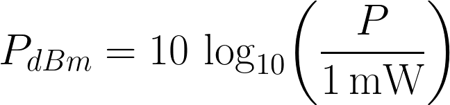
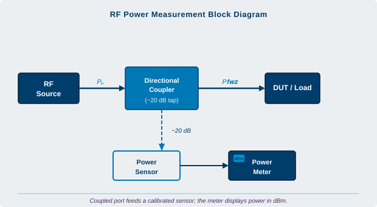
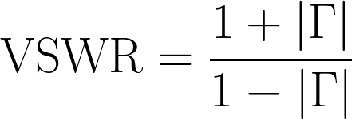

Appendix A: Glossary of Terms
Albaloy. A plating finish with good electrical performance, mostly copper, tin, and zinc. Unlike silver, albaloy is extremely tarnish-resistant. It performs as well as silver in passive intermodulation (PIM) thanks to its non-magnetic nature.
Amplitude Balance. The greatest amplitude difference, measured in dB, between a power divider or hybrid coupler's output ports within a designated frequency range.
Attenuation Accuracy. The degree to which the attenuator's magnitude varies from its nominal value throughout the whole frequency range.
Attenuator. A passive network or device that transmits the remaining signal with the least amount of distortion after absorbing a portion of the input signal. Attenuators are used daily in lab applications to help with product design. They match circuits, reduce signal levels to detectors, and extend the dynamic range of devices like power meters and amplifiers. Transmission lines that would otherwise have uneven signal levels are balanced using attenuators.
Base Station. A fixed transmitter and receiver that allows a mobile radio transceiver to connect to the public switched telephone network.
Bias Tee. A passive component that can be added or removed from RF circuits to introduce DC voltage without changing the RF signal traveling through the primary transmission path. Common in BTS control modules to remotely power bi-directional amplifiers (BDAs), repeaters, and tower-top amplifiers (TTAs).
Circulator. A three-port passive ferromagnetic device that modifies the flow of signals in radio-frequency circuits.
Coaxial. A transmission line where the two conductors are coaxial, totally encircling each other, and continuously separated by a dielectric such as PTFE or air.
CW (Continuous Wave). A constant-amplitude signal used to distinguish a microwave component's performance for pulsed signals from its behavior at continuous power levels.
dB (Decibel). Ten times the common logarithm of the ratio between two power levels, or twenty times the common logarithm of the ratio between two voltages. The unit of gain.

dBm. Decibels relative to 1 mW. The microwave industry's standard power level unit. 0 dBm = 1 mW, +10 dBm = 10 mW, +20 dBm = 100 mW, and so on.
DC Block. An in-line component used to block DC voltages in RF circuits while maintaining the integrity of the RF signal. The three fundamental kinds are: - Inner: Blocks DC voltages on the inner conductor only. - Outer: Blocks DC voltages on the outer conductor only. - Inner/Outer: Blocks DC voltages on both conductors.

Directional Coupler. A passive device that accurately and conveniently samples incident and reflected microwave power while causing the least amount of transmission-line disturbance. Directional couplers find general use in load-source isolators, power measurements, and line monitoring.
Directivity. A comparison between the desired and unwanted signal strengths, calculated by subtracting the specified coupling (including all variations) from the isolation value. Directivity is comparable to a coil's Q factor and indicates how well a coupler performs.
EMI (Electromagnetic Interference). Unintentionally interfering signals produced by electronic devices, either internally or externally. Electromechanical switching equipment and power-line transients are common sources.
Frequency Range. The lowest and highest frequencies at which a given component will satisfy every guaranteed specification.
Frequency Sensitivity. The greatest peak-to-peak variation in a directional or hybrid coupler's coupling (measured in dB) within the designated frequency range. Also known as "flatness."
GHz (Gigahertz). A frequency unit equivalent to one billion hertz or 1000 megahertz (MHz).
Hybrid Coupler. A passive four-port device used to combine two signals with high isolation between them, or to equally split an input signal with a 90° phase shift between the output signals.
Impedance. Alternating-current resistance. The majority of microwave and radio systems are made to function with a characteristic 50-ohm impedance.
Input VSWR. With all other ports terminated in 50-ohm loads, the minimum voltage standing-wave ratio of a power divider found at the input (sum) port over the designated frequency range.
Insertion Loss. The variation in load power brought about by adding a specific device to a transmission system.
Iridite. A chemical film that acts as a barrier to stop corrosion on aluminum surfaces and improve the adhesion of later coatings like paints and primers. This film is usually clear or yellow in color.
Isolation. A measurement (in dB) used to express how far apart the signal levels are on a device's neighboring ports. Less interference from a signal on one port is present at the other when the isolation value is higher.
Isolator. A passive, two-port ferromagnetic device with an internal resistor to regulate the direction of signal flow. Usually employed to prevent excessive signal reflection on other radio-frequency components.
MHz (Megahertz). A frequency unit equivalent to one million hertz or one thousand kilohertz (kHz).
Microstrip (Microstripline). A transmission line with a thin, solid dielectric separating the solid ground-plane metallization and a metallized strip. Above 400 MHz and below 6 GHz, microstrip is commonly used because it allows precise fabrication of transmission lines on ceramic or PC-board substrates. Stripline technology is typically preferred for higher frequencies or broadband devices.
MTBF (Mean Time Between Failure). The useful life of the materials used to assemble a device, frequently cited as the cause of the mean (average) time between component failures. When a component fails, MTBF assumes that it can be "renewed," or repaired and put back into service promptly.
Non-Coherent Signals. Power dissipation is the limiting factor for most Wilkinson power dividers used as combiners. Power is lost through cancellation across the isolation resistors caused by out-of-phase, non-coherent, or amplitude-unbalanced input signals. Typical industry designs use low-power alumina surface-mount resistor chips on a thermally insulative circuit board because these devices are primarily used as dividers. The maximum input for merging non-coherent signals on neighboring ports is equal to (divider's rated input power × 5%) / N, where N is the number of input channels. The chip resistors will heat up and deteriorate if the rated power is exceeded, causing loss of VSWR and port-to-port isolation.
Output VSWR. Minimum voltage standing-wave ratio of a power divider at any output port, with all other ports terminated in 50-ohm loads, over the given frequency range.
Passivation. The direct creation of an insulated layer to shield a metal surface from impurities, moisture, or particles.
Phase Balance. The maximum phase difference (in degrees) between a power divider's output ports at any given frequency within a given range.
PIM (Passive Intermodulation). When two or more signals are present in a passive device (cable, connector, coupler, etc.) that responds nonlinearly, the result is called passive intermodulation. Usually, loose or unclean interconnects or dissimilar metals are the source of the nonlinearity. At low input signal levels, nonlinearity is usually not problematic. Desensitization will happen if PIM is generated from a high-power transmitter path to a nearby receiver channel. A typical PIM specification is -110 dBc or better.
Power (Average). The highest mean (average) power of a pulsed or modulated signal that a component can dissipate at room temperature without a drop in performance.
Power (Peak). The amount of instantaneous power that a component can dissipate without performance degrading for a given percentage of the duty cycle (usually 2%).
PTFE (PolyTetraFluoroEthylene). An insulator used in RF and microwave coaxial connectors. PTFE has a low and stable dielectric constant and loss factor over a wide temperature and frequency range.
Reactive Splitter. A broadband passive network that distributes power from an input port equally among any number of output ports without significantly altering the phase relationship or producing distortion. Reactive splitters do not offer port isolation, which sets them apart from Wilkinson power dividers.

Return Loss. The ratio of incident power to reflected power, expressed in decibels. It is measured when a transmission line is terminated or connected to any kind of passive or active device. It can be converted to reflection coefficient, which in turn can be converted to VSWR.
RF (Radio Frequency). Generally, any frequency (usually above 50 MHz) at which electromagnetic radiation is practical. Any frequency above 1000 MHz is regarded as microwave.
RF Leakage. The quantity of energy that radiates or "leaks" from a device or connector. Usually measured in dB and tested at a single frequency. Very large negative numbers suggest the device emits very little energy.
RoHS. The European Union adopted the Restriction of Hazardous Substances Directive in February 2003, setting limits for the following substances in electrical and electronic equipment: - Lead (Pb) < 0.1% - Mercury (Hg) < 0.1% - Cadmium (Cd) < 0.01% - Hexavalent Chromium (Cr⁶⁺) < 0.1% - Polybrominated Biphenyls (PBB) < 0.1% - Polybrominated Diphenyl Ethers (PBDE) < 0.1%
Stripline. A transmission line consisting of conductors positioned above or between long conducting surfaces. Stripline is typically more advantageous for higher frequencies or broadband devices.
Termination (RF Loads). Used to terminate a transmission line or port in its characteristic impedance at the end of the line. Any unused port of a multi-port microwave device must be terminated to guarantee an accurate measurement.
Temperature. Unless otherwise stated, the lowest and highest ambient temperatures at which a particular component can function without failing to meet all guaranteed specifications.
Torque. Recommended mating torque for industry-standard connectors: - SMA: 7 to 10 in-lbs - Type-N: 12 to 15 in-lbs - TNC: 12 to 15 in-lbs - 7/16 DIN: 220 to 300 in-lbs
Transmission Line. Signal-carrying conductive connections between circuit elements. Common examples include wire, coaxial cable, microstrip and stripline traces, and waveguides.
VSWR (Voltage Standing-Wave Ratio). The ratio in a transmission line between incident and reflected signals. Since VSWR cannot be measured directly, the return loss between incident and reflected power is calculated and expressed in dB, then converted.
Wilkinson Power Divider. A passive device that combines signals into a single port or evenly divides an input into multiple outputs with port-to-port isolation. Power dissipation is the limiting factor for Wilkinson power dividers used as combiners, because out-of-phase or amplitude-imbalanced inputs cause cancellation across the internal isolation resistors.